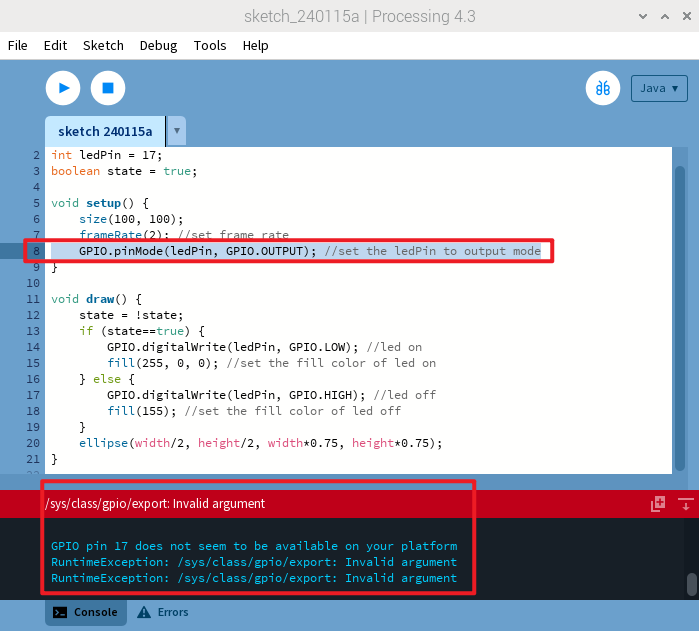

Note
Bonjour, bienvenue dans la communauté SunFounder Raspberry Pi & Arduino & ESP32 Enthusiasts sur Facebook ! Plongez plus profondément dans l’univers de Raspberry Pi, Arduino et ESP32 avec d’autres passionnés.
Pourquoi nous rejoindre ?
Support d’experts : Résolvez les problèmes après-vente et les défis techniques grâce à l’aide de notre communauté et de notre équipe.
Apprendre & Partager : Échangez des astuces et des tutoriels pour améliorer vos compétences.
Aperçus exclusifs : Accédez en avant-première aux annonces de nouveaux produits et aux aperçus exclusifs.
Remises spéciales : Profitez de réductions exclusives sur nos nouveaux produits.
Promotions festives et cadeaux : Participez à des concours et promotions pendant les fêtes.
👉 Prêt à explorer et créer avec nous ? Cliquez sur [Ici] et rejoignez-nous dès aujourd’hui !
Pour le Pi 5
La sortie du Raspberry Pi 5 nous a apporté un modèle plus puissant, mais elle a également introduit quelques changements, notamment au niveau du GPIO. Bien qu’il conserve son interface standard à 40 broches, la fonctionnalité a évolué en raison de sa connexion avec la nouvelle puce southbridge RP1 intégrée. Cette puce RP1 personnalisée gère désormais les périphériques sur le Pi 5 et a entraîné diverses préoccupations en matière de compatibilité. Actuellement, seule la bibliothèque GPIO Zero, maintenue officiellement par l’organisation Raspberry Pi, est entièrement compatible. Nous avons développé une série de cours spécialement axés sur cette bibliothèque.
Pour les problèmes de compatibilité avec d’autres langages de programmation, veuillez consulter les informations détaillées ci-dessous :
Processing
Lorsque vous utilisez Processing 4 sur Raspberry Pi 5, la programmation GPIO rencontre des difficultés. Des erreurs telles que « Invalid argument » et « GPIO pin 17 seems to be unavailable on your platform » apparaissent lors de l’exécution de code lié au GPIO (comme illustré sur l’image ci-jointe). Pour plus de détails, rendez-vous sur : https://github.com/benfry/processing4/issues/807
Node.js
Node.js utilise la bibliothèque pigpio, qui, à ce jour, ne prend pas en charge le Raspberry Pi 5. Pour plus d’informations, visitez : https://github.com/joan2937/pigpio/issues/589

Sur un système 64 bits, l’importation de la bibliothèque GPIO du Raspberry Pi pose des problèmes, entraînant une absence de réponse. Pour plus d’informations, visitez : https://github.com/raspberrypi/bookworm-feedback/issues/91.